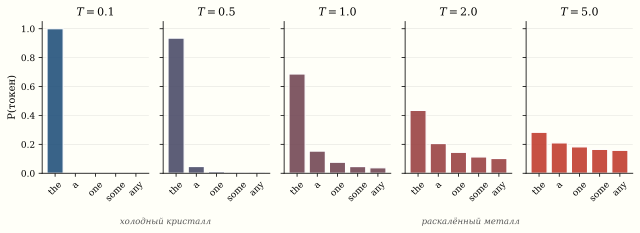

Глобальная оптимизация: от муравьёв до температуры в LLM
Задача коммивояжёра для 100 городов имеет {\sim}10^{156} возможных маршрутов. Перебирать все — дольше, чем возраст Вселенной. Но природа решает подобные задачи каждый день: муравьи находят кратчайший путь к пище, металл при охлаждении принимает кристаллическую структуру с минимальной энергией, а стая птиц координируется без лидера. Три метаэвристики — генетический алгоритм, роевой интеллект и имитация отжига — переносят эти идеи в код. А та же «температура» из отжига неожиданно появляется при генерации текста в ChatGPT.
Задача коммивояжёра (TSP) как полигон
n городов, матрица расстояний D_{ij}. Найти перестановку \pi, минимизирующую суммарную длину тура:
L(\pi) = \sum_{i=1}^{n-1} D_{\pi(i), \pi(i+1)} + D_{\pi(n), \pi(1)}.
TSP — NP-трудна. Перебрать все маршруты невозможно ни при каком разумном n: уже при n \gtrsim 25 перебор займёт дольше возраста Вселенной (при скорости 10^9 маршрутов/с). Точные алгоритмы (Concorde, LKH) справляются с тысячами городов, но для n \sim 10^4 требуют часов. Метаэвристики находят решения, близкие к оптимуму, за секунды.
Генетический алгоритм (GA)
Holland (1975)1 — имитация эволюции:
1 Holland, J.H. Adaptation in Natural and Artificial Systems. University of Michigan Press, 1975.
1. Популяция. P случайных туров (перестановок).
2. Fitness. f(\pi) = 1 / L(\pi) — чем короче тур, тем выше приспособленность.
3. Селекция. Турнирный отбор: из случайной пары выбираем лучшего.
4. Кроссовер (Order Crossover, OX). Берём подстроку из родителя A, оставшиеся позиции заполняем из родителя B в порядке появления.
5. Мутация. С малой вероятностью p_m \approx 0.01 меняем местами два случайных города.
6. Следующее поколение. Лучшие потомки заменяют худших.
import numpy as np
def solve_tsp_ga(D, pop_size=200, generations=500, mutation_rate=0.02):
n = D.shape[0]
def tour_length(tour):
return sum(D[tour[i], tour[(i+1) % n]] for i in range(n))
# Инициализация
population = [np.random.permutation(n) for _ in range(pop_size)]
best_ever = min(population, key=tour_length)
best_len = tour_length(best_ever)
history = []
for gen in range(generations):
fitness = np.array([1.0 / tour_length(p) for p in population])
new_pop = []
for _ in range(pop_size):
# Турнирная селекция
i, j = np.random.choice(pop_size, 2, replace=False)
parent_a = population[i] if fitness[i] > fitness[j] else population[j]
i, j = np.random.choice(pop_size, 2, replace=False)
parent_b = population[i] if fitness[i] > fitness[j] else population[j]
# Order Crossover (OX)
child = np.full(n, -1)
start, end = sorted(np.random.choice(n, 2, replace=False))
child[start:end] = parent_a[start:end]
fill = [g for g in parent_b if g not in child[start:end]]
idx = 0
for k in range(n):
if child[k] == -1:
child[k] = fill[idx]
idx += 1
# Мутация (swap)
if np.random.rand() < mutation_rate:
i, j = np.random.choice(n, 2, replace=False)
child[i], child[j] = child[j], child[i]
new_pop.append(child)
population = new_pop
current_best = min(population, key=tour_length)
current_len = tour_length(current_best)
if current_len < best_len:
best_ever = current_best.copy()
best_len = current_len
history.append(best_len)
return best_ever, best_len, history
# Пример: 50 случайных городов
n_cities = 50
np.random.seed(42)
coords = np.random.rand(n_cities, 2) * 100
D = np.sqrt(((coords[:, None] - coords[None, :]) ** 2).sum(axis=2))
best_tour, best_length, history = solve_tsp_ga(D)
print(f"GA: лучший тур = {best_length:.2f}")Particle Swarm Optimization (PSO)
Kennedy и Eberhart (1995)2 — вдохновлены стаей птиц и косяком рыб.
2 Kennedy, Eberhart. Particle Swarm Optimization, IEEE ICNN, 1995.
Алгоритм
Каждая «частица» i имеет: - позицию x_i \in \mathbb{R}^d - скорость v_i \in \mathbb{R}^d - лучшую личную позицию p_i (personal best) - лучшую позицию всей стаи g (global best)
На каждом шаге:
v_i \leftarrow \underbrace{w \cdot v_i}_{\text{инерция}} + \underbrace{c_1 r_1 (p_i - x_i)}_{\text{когнитивная}} + \underbrace{c_2 r_2 (g - x_i)}_{\text{социальная}},
x_i \leftarrow x_i + v_i,
где w \approx 0.7 — коэффициент инерции, c_1, c_2 \approx 1.5 — коэффициенты «доверия» к себе и стае, r_1, r_2 \sim U(0,1) — случайные числа.
- Инерция (w v_i): частица продолжает движение по инерции — exploration.
- Когнитивная (c_1 r_1 (p_i - x_i)): частица помнит своё лучшее место.
- Социальная (c_2 r_2 (g - x_i)): частица стремится к лучшему месту стаи.
Баланс между exploration (инерция) и exploitation (социальная) определяет эффективность PSO. Слишком большая инерция — стая разлетается. Слишком сильная социальная сила — все слетаются к локальному минимуму.
import numpy as np
import matplotlib.pyplot as plt
def pso(f, bounds, n_particles=30, max_iter=200,
w=0.7, c1=1.5, c2=1.5):
"""Particle Swarm Optimization."""
d = len(bounds)
lo = np.array([b[0] for b in bounds])
hi = np.array([b[1] for b in bounds])
# Инициализация
x = np.random.uniform(lo, hi, (n_particles, d))
v = np.random.uniform(-(hi-lo)*0.1, (hi-lo)*0.1, (n_particles, d))
p_best = x.copy()
p_best_val = np.array([f(xi) for xi in x])
g_best = p_best[np.argmin(p_best_val)].copy()
g_best_val = p_best_val.min()
history = [g_best_val]
for t in range(max_iter):
r1 = np.random.rand(n_particles, d)
r2 = np.random.rand(n_particles, d)
v = w * v + c1 * r1 * (p_best - x) + c2 * r2 * (g_best - x)
x = x + v
x = np.clip(x, lo, hi)
vals = np.array([f(xi) for xi in x])
improved = vals < p_best_val
p_best[improved] = x[improved]
p_best_val[improved] = vals[improved]
if vals.min() < g_best_val:
g_best = x[np.argmin(vals)].copy()
g_best_val = vals.min()
history.append(g_best_val)
return g_best, g_best_val, history
# Функция Растригина: много локальных минимумов
def rastrigin(x):
return 10 * len(x) + sum(xi**2 - 10 * np.cos(2 * np.pi * xi)
for xi in x)
best, best_val, hist = pso(rastrigin, [(-5.12, 5.12)] * 10,
n_particles=50, max_iter=300)
print(f"PSO на Rastrigin (d=10): f* = {best_val:.6f}")
# Глобальный минимум = 0 при x = 0Визуализация роя

Имитация отжига (SA) и температура
Kirkpatrick et al. (1983)3 — прямая аналогия с физикой:
3 Kirkpatrick, Gelatt, Vecchi. Optimization by Simulated Annealing, Science, 1983.
При высокой температуре атомы металла свободно перемещаются (жидкость). При медленном охлаждении они упорядочиваются в кристалл — состояние с минимальной энергией.
Критерий Метрополиса
На каждом шаге предлагаем случайное изменение \Delta E = f(x') - f(x):
P(\text{принять}) = \begin{cases} 1, & \text{если } \Delta E < 0 \text{ (улучшение)}, \\ \exp(-\Delta E / T), & \text{если } \Delta E \geq 0 \text{ (ухудшение)}. \end{cases}
При высоком T принимаем почти любое изменение (exploration). При низком T — только улучшения (exploitation).
Расписание охлаждения
T(t) = T_0 \cdot \alpha^t, \quad \alpha \in [0.95, 0.999].
Температура в LLM: та же формула
Это не случайное совпадение формул. В 1986 году Хинтон и соавторы (Boltzmann machines) напрямую позаимствовали критерий Метрополиса для обучения нейронных сетей: вероятность активации нейрона определялась той же формулой \sigma(\Delta E / T). Оттуда температурный параметр перешёл в softmax-сэмплинг языковых моделей.
При генерации текста модель вычисляет логиты z_i для каждого токена i в словаре и применяет softmax:
P(i) = \frac{\exp(z_i / T)}{\sum_j \exp(z_j / T)}.
Параметр T — temperature — управляет «случайностью» генерации:
| T | Поведение | Аналогия |
|---|---|---|
| T \to 0 | Жадный выбор (argmax) | Замороженный кристалл |
| T = 1 | Стандартное распределение | Комнатная температура |
| T > 1 | Более равномерное, «креативное» | Нагретый металл |

Во всех трёх методах ключевой параметр управляет балансом между исследованием (exploration) и эксплуатацией (exploitation):
- GA: вероятность мутации p_m
- PSO: инерция w vs социальная сила c_2
- SA/LLM: температура T
Все три задачи — TSP, минимизация Растригина, генерация текста — сводятся к одной: найти хорошее решение в огромном дискретном или непрерывном пространстве, избегая ловушек локальных оптимумов.
Разбросайте города случайно и запустите имитацию отжига вживую: алгоритм 2-opt переставляет рёбра, с убывающей температурой иногда соглашаясь на ухудшение — и выходит из локальных ловушек. Слева — найденный маршрут, справа — как падала его длина. Меняйте число городов и зерно.
Сравнение на TSP
# SA для TSP
def solve_tsp_sa(D, T0=100, alpha=0.9995, max_iter=100000):
n = D.shape[0]
tour = np.random.permutation(n)
def length(t):
return sum(D[t[i], t[(i+1)%n]] for i in range(n))
current_len = length(tour)
best_tour = tour.copy()
best_len = current_len
T = T0
for step in range(max_iter):
# Случайная перестановка двух городов
i, j = sorted(np.random.choice(n, 2, replace=False))
new_tour = tour.copy()
new_tour[i:j+1] = new_tour[i:j+1][::-1] # 2-opt move
new_len = length(new_tour)
dE = new_len - current_len
if dE < 0 or np.random.rand() < np.exp(-dE / T):
tour = new_tour
current_len = new_len
if current_len < best_len:
best_tour = tour.copy()
best_len = current_len
T *= alpha
return best_tour, best_len
best_sa, len_sa = solve_tsp_sa(D)
print(f"SA: лучший тур = {len_sa:.2f}")Резюме
| Метод | Вдохновение | Ключевой параметр | Сильная сторона |
|---|---|---|---|
| GA | Эволюция | Мутация, кроссовер | Комбинаторика, гибкость представления |
| PSO | Стая птиц | Инерция, социальная сила | Непрерывные задачи, простота |
| SA | Кристаллизация | Температура T | Богатая теория сходимости (гарантия — при логарифм. охлаждении) |
| LLM sampling | SA / Больцман (1986) | Температура T | Управление случайностью генерации, баланс точность/разнообразие |
Все четыре — варианты стохастического поиска, и все управляют одним и тем же dial: случайность → детерминизм.